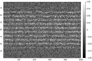
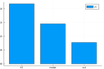

SVD Imputation
Often matrices and n-dimensional arrays with missing values can be imputed via a low rank approximation. Impute.jl provides one such method using a single value decomposition. The general idea is to:
- Fill the missing values with some rough approximates (e.g.,
mean,median,rand) - Reconstruct this "completed" matrix with a low rank SVD approximation (i.e.,
klargest singular values) - Replace our initial estimates with the reconstructed values
- Repeat steps 1-3 until convergence (update difference is below a tolerance)
To demonstrate how this is useful lets load a reduced MNIST dataset. We'll want both the completed dataset and another dataset with 35% of the values set to -1.0 (indicating missingness).
TODO: Update example with more a realistic dataset like some microarray data
using Distances, Impute, Plots, Statistics
mnist = Impute.dataset("test/matrix/mnist");
completed, incomplete = mnist[0.0], mnist[0.25];([0.0 0.0 … 0.0 0.0; 0.0 0.0 … 0.0 0.0; … ; 0.0 0.0 … 0.0 0.0; 0.0 0.0 … 0.0 0.0], [0.0 0.0 … -1.0 0.0; 0.0 0.0 … 0.0 0.0; … ; -1.0 0.0 … 0.0 0.0; 0.0 0.0 … -1.0 -1.0])
Alright, before we get started lets have a look at what our incomplete data looks like:
heatmap(incomplete; color=:greys);/home/runner/.julia/packages/GR/cRdXQ/src/../deps/gr/bin/gksqt: error while loading shared libraries: libQt5Widgets.so.5: cannot open shared object file: No such file or directory connect: Connection refused GKS: can't connect to GKS socket application GKS: Open failed in routine OPEN_WS GKS: GKS not in proper state. GKS must be either in the state WSOP or WSAC in routine ACTIVATE_WS

Okay, so as we'd expect there's a reasonable bit of structure we can exploit. So how does the svd method compare against other common, yet simpler, methods?
data = Impute.declaremissings(incomplete; values=-1.0)
# NOTE: SVD performance is almost identical regardless of the `init` setting.
imputors = [
"0.5" => Impute.Replace(; values=0.5),
"median" => Impute.Substitute(),
"svd" => Impute.SVD(; tol=1e-2),
]
results = map(last.(imputors)) do imp
r = Impute.impute(data, imp; dims=:)
return nrmsd(completed, r)
end
bar(first.(imputors), results);/home/runner/.julia/packages/GR/cRdXQ/src/../deps/gr/bin/gksqt: error while loading shared libraries: libQt5Widgets.so.5: cannot open shared object file: No such file or directory connect: Connection refused GKS: can't connect to GKS socket application GKS: Open failed in routine OPEN_WS GKS: GKS not in proper state. GKS must be either in the state WSOP or WSAC in routine ACTIVATE_WS
